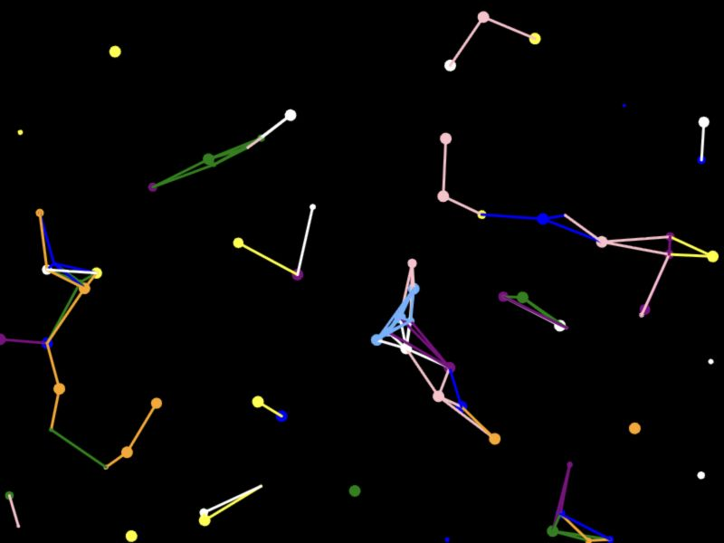

PROJECT 04
Particle Network
Creative Coding I · 2026
Moving particles create temporary connections when they come close. Adding particles changes the density of the network.
Interaction
Click to add five particles. Move the pointer to draw additional line marks.
Run the sketch in a new tab to interact with the original artwork.
- MEDIUM
- JavaScript / p5.js
- YEAR
- 2026
- TECHNIQUES
- Particles / Connections
- ORIGINAL TITLE
- Jeremy work3